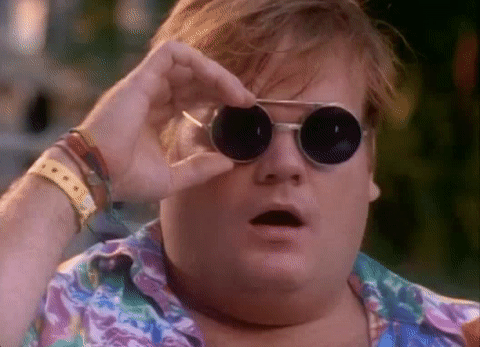
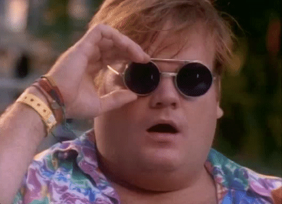

PROJECT
ROLE
Co-founder
OBJECTIVE
MyFaceWhen was one of the first iOS GIF creation apps of 2012, birthed out of the idea to amplify the meme culture behind the phrase 'MyFaceWhen' and give people a better way to express themselves to their family and friends by creating, discovering, and sharing GIFs via mobile devices, emails, and social media networks.
STRATEGY
Because I'm happy clap along if you feel like happiness is in you. Because I'm happyyyyyy clap along if you know that happiness is in you. Because I'm happy happy happy happy happy happy happy happy happy happy happy happy happy happy happy. Because I'm happy clap along if you feel like happiness is in you. Can't nothing break me down can't nothing let me down my love is too um.
RESULTS
Downloads: 250K+, Apple Store Rating: 4.5, Reach: 500+ Countries, Press: Mashable, Vanity Fair, Refinery 29, CW33 News, and more.
MEDIA

 


Add a back button right here.